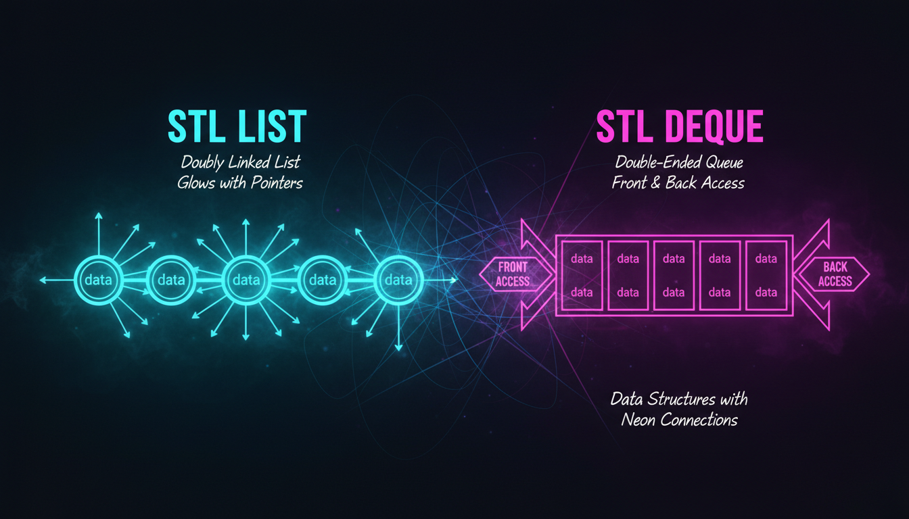

std::list, std::deque, двозв'язні списки, порівняння

list — це двозв'язний список, що підтримує швидке вставлення та видалення на будь-якій позиції.
#include <iostream>
#include <list>
int main() {
std::list<int> lst = {10, 20, 30, 40, 50};
// Додавання
lst.push_back(60); // В кінець
lst.push_front(5); // На початок
// Вставка
auto it = lst.begin();
++it; ++it;
lst.insert(it, 25); // Вставити перед позицією
// Видалення
lst.remove(30); // Видалити всі 30
lst.pop_front(); // Видалити перший
lst.pop_back(); // Видалити останній
// Ітерація
for (int x : lst) {
std::cout << x << " ";
}
std::cout << std::endl;
return 0;
}deque (double-ended queue) — структура, що підтримує швидке додавання та видалення на обох кінцях.
#include <iostream>
#include <deque>
int main() {
std::deque<int> dq;
dq.push_back(20);
dq.push_front(10);
dq.push_back(30);
std::cout << "Перший: " << dq.front() << std::endl; // 10
std::cout << "Останній: " << dq.back() << std::endl; // 30
std::cout << "Третій: " << dq[2] << std::endl; // 30
return 0;
}